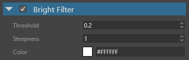

Bright filter
Intermediate Artist
The bright filter extracts the brightest areas of an image. The bright filter itself isn't a post effect, but its result is used later by other effects such as bloom, light streaks, and lens flare.
Properties

| Property | Description |
|---|---|
| Threshold | The threshold used to determine if a color passes or fails the bright filter. |
| Steepness | Increasing the steepness has a similar effect to increasing the threshold, but causes less aliasing risk. However, the effect is more washed out. For better temporal stability, if your scene has HDR spreads, setting the steepness to a value somewhere in the middle of the expected maximum allows for smooth filtering of bright spots. For sharpness, we recommend you keep a threshold. |
| Color | The result of the bright filter is modulated by this color value, then affects the color of other post effects. If set to white, the color isn't modified. |